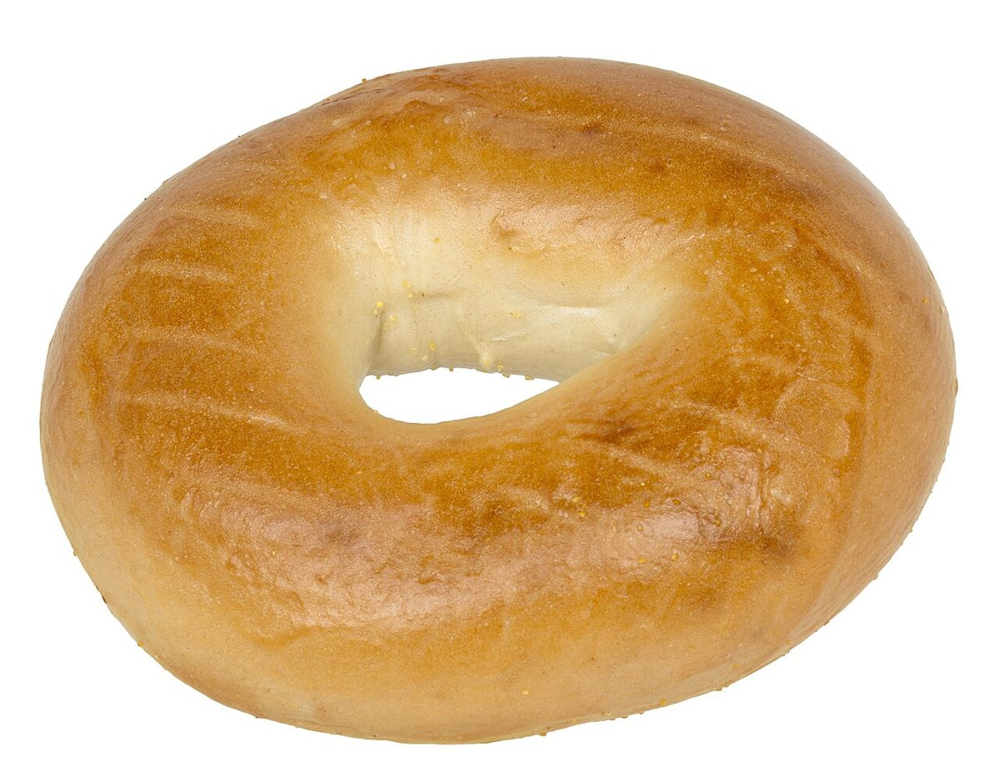
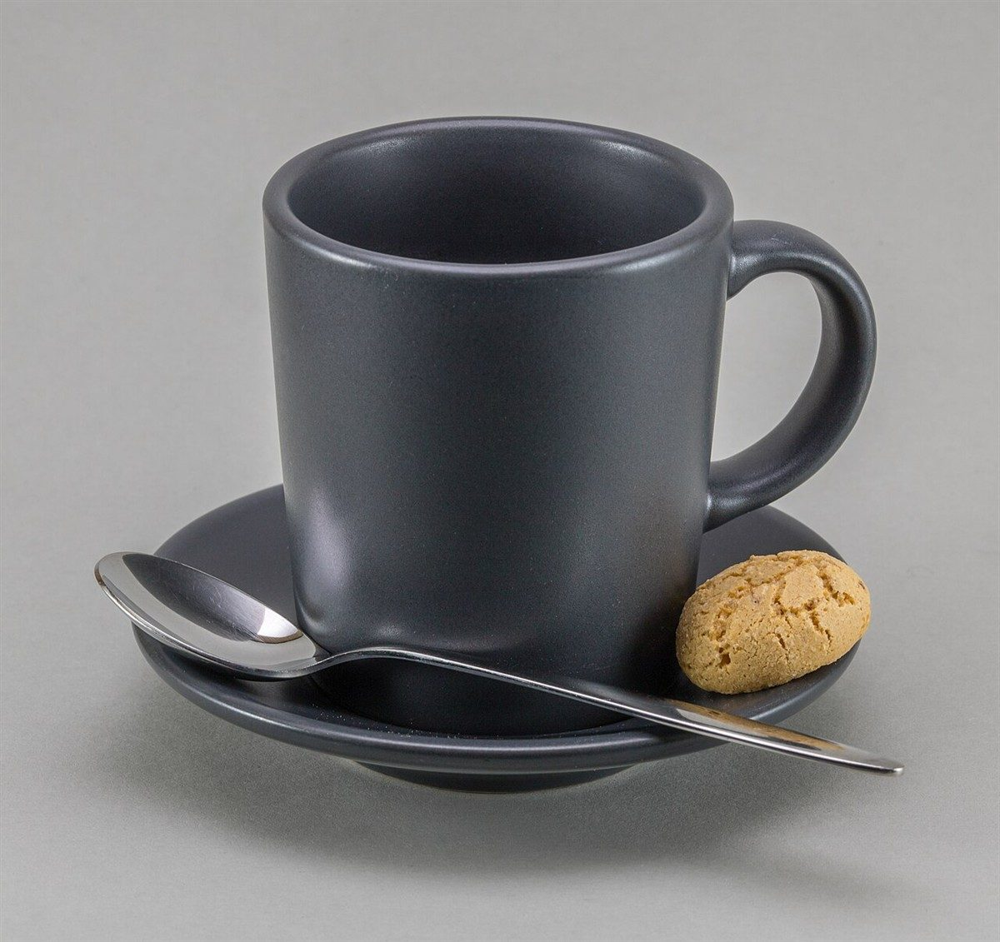

ベーグルのお店 / 広島県東広島市
Bagel SHOPpole pole
広島県東広島市八本松東にあるベーグルのお店「Bagel SHOP pole pole」のご案内ページです。営業時間やメニューなど、詳しいことは準備中。まずはInstagramをのぞいてみてください。

制作側の連想
「ぽれぽれ」と四つの文字から考えたこと
屋号の由来は分かりません。制作側は「pole pole」という同じ音のくり返しから、ぽ・れ・ぽ・れ、と一文字ずつゆっくり声に出す読み方を連想しました。そこでこのサイトは、大きなひらがなを一文字ずつ、ゆっくり読むような作りにしています。お店の理念・由来とは無関係の、制作側の連想です。
四文字の写真帖(イメージ)
ぽ・れ・ぽ・れ、ひとつずつ。
写真は東広島市やお店のものではありません。輪のかたちやパン生地のイメージで選んだ、国外・撮影地不明のフリー素材です。
- ぽ

輪のかたち
- れ

ふくらむ生地
- ぽ

窯の火
- れ

ひと息のカップ
ご案内
お店のこと(確認できたものだけ)
| 所在地 | 〒739-0142 広島県東広島市八本松東６丁目２ |
|---|---|
| 電話 | なし |
| 営業時間 | 準備中 |
| 定休日 | 準備中 |
| ご予約 | 準備中 |
| 駐車場 | 準備中 |
| SNS | Instagram @polepolenet |